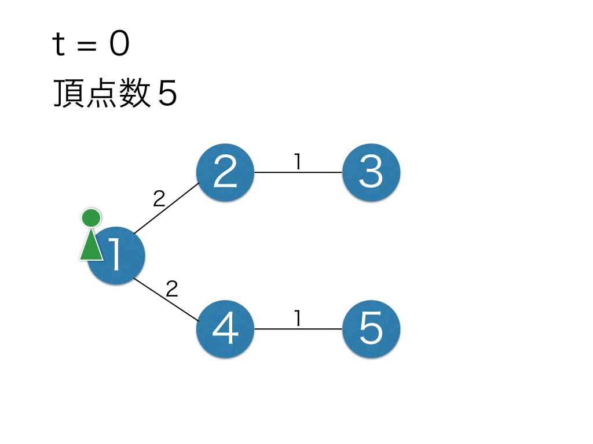
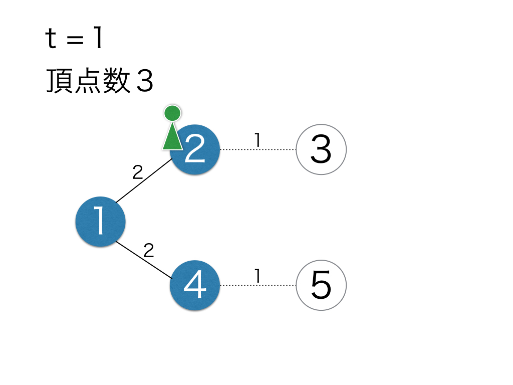

$N$ 頂点 $M$ 辺の単純連結無向グラフがある． 頂点には $1, 2, \cdots, N$ と番号がつけられている． 辺には $1, 2, \cdots, M$ と番号がつけられており，辺 $i$ は頂点 $a_i$ と $b_i$ をつないでいる． また，辺 $i$ は時刻 $t_i$ に消える．どの辺も通過するために単位時間がかかる． あなたは最初，時刻 0 において頂点 1 にいる． あなたは最適に行動することで，時刻 $T$ までに得られるスコアを最大化したい． スコアは最初 0 であり，イベントは以下に従って起きる．
得られるスコアの最大値を求めよ．
入力は以下の形式で与えられる．
$N \ M \ T$
$a_1 \ b_1 \ t_1$
$\vdots$
$a_M \ b_M \ t_M$
スコアの最大値を出力せよ．また，末尾に改行も出力せよ．
5 4 2 1 2 2 2 3 1 1 4 2 4 5 1
8
時刻 0 に 5，時刻 1 に 3 のスコアを得られる．
 
4 4 3 1 2 2 2 3 1 3 4 3 4 1 1
8
時刻 0 に 4，時刻 1 に 2，時刻 2 に 2 のスコアを得られる．